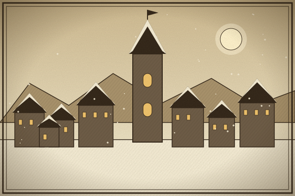
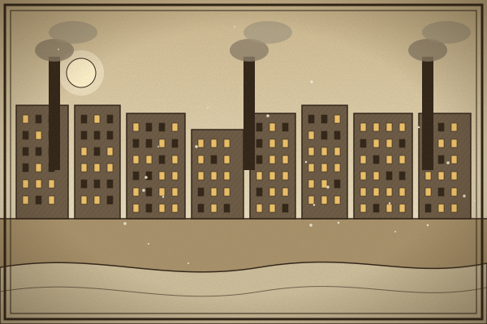
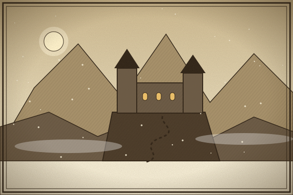
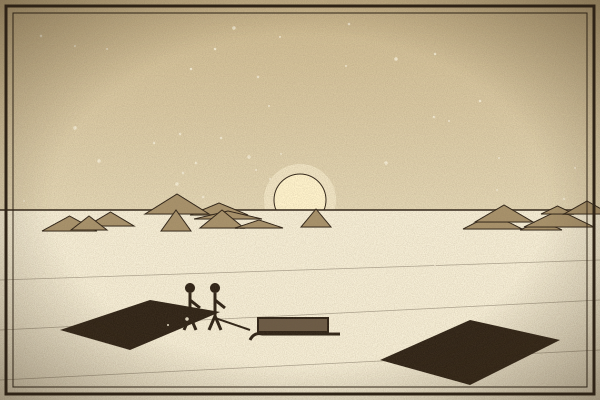
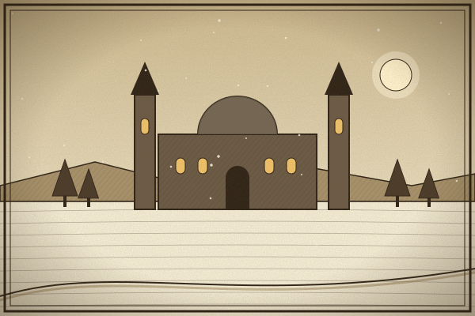
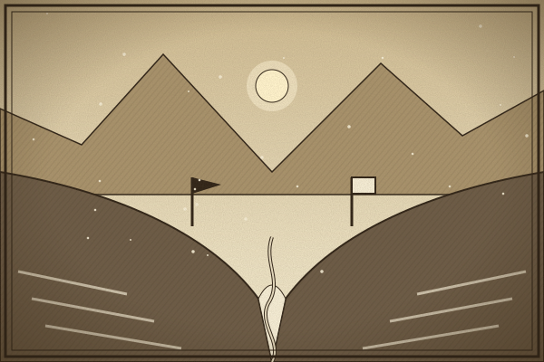

TOURIST INFORMATION
Locations, regions, and survival essentials for Karhide, Orgoreyn, and the ice.
Click a marker to explore Gethen's destinations, from the halls of Erhenrang to the endless Gobrin Ice.
Why Visit
Travel Tip

Karhide
The capital of Karhide, a city of steep stone roofs built to shed heavy snow and the seat of King Argaven XV's court.
Find on Map
Orgoreyn
The largest city on Gethen and the capital of Orgoreyn, administered by the thirty-three Commensals.
Find on Map
Karhide
A remote Handdarata retreat where the Foretellers live and practice.
Find on Map


Disputed Border
A fertile valley along the Karhide-Orgoreyn border, claimed by both nations.
Find on MapGethen—designated Winter in Hainish Ekumen reports—is a harsh, ice-bound world inhabited by ambisexual humans. This guide covers its two dominant nations: Karhide and Orgoreyn.
A fragmented, feudal realm of deep-rooted clan loyalties, ancient customs, and dramatic mountain scenery. One of the oldest stable civilizations on the planet.
A vast, highly organized, and industrialized state on a sweeping plateau. In sharp contrast to Karhide's feudal clans, Orgoreyn is governed by a council of thirty-three Commensals who oversee a unified collective bureaucracy.
DESTINATION 01
[Placeholder: slogan]
[Placeholder: short description]
DESTINATION 02
[Placeholder: slogan]
[Placeholder: short description]
DESTINATION 03
[Placeholder: slogan]
[Placeholder: short description]